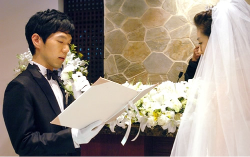
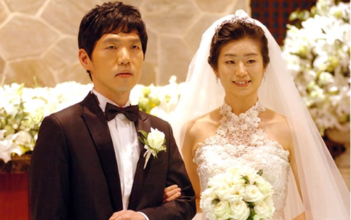
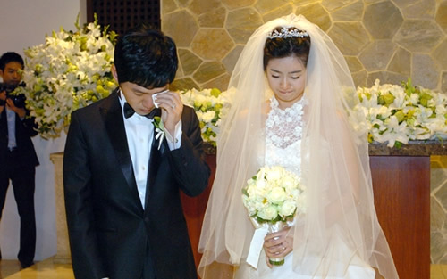

李昌镐婚礼形式简单 向父母行礼石佛落泪
#1 李昌镐婚礼形式简单 向父母行礼石佛落泪 作者：岳麓小棋后 发表时间：2010-10-31 14:06:08
新浪体育讯 北京时间10月28日傍晚，35岁的李昌镐与24岁的李度仑在首尔举办了婚礼。他们的婚礼为非公开，参加婚礼的除了曹薰铉夫妇之外，全部是他们两家的亲戚，共到了200多人。为了不至于招待不周，李昌镐事前已经向所有棋手同事说明了情况，提前征得到谅解。常昊是李昌镐多年的好朋友，原来常昊是准备到韩国去亲自祝贺的，李昌镐也主动向他说明了情况，征得了常昊的理解。曹薰铉九段是唯一受邀请参加婚礼的棋手。其中的情况大家都是知道的，李昌镐是曹薰铉的内弟子，这种情分远远超过了单纯的老师的概念。曹薰铉今天也说了，“邀请我参加，不是以棋手的身份，他想的是把我当成了家里的一员。”
李昌镐的婚礼进行得非常简单。首先是双方一起朗诵婚姻誓约。然后，交换信物和象征性地接吻一下。再往后是两家的亲戚一起朗诵成婚宣言书。最后，两位新人向两家的父母行礼。形式就简单地走完了。李昌镐在向父母行礼时，情不自禁地落泪，当然这应该是幸福的泪水。
婚礼上，李昌镐和李度仑透露，他们将去日本的小松市度过新婚旅行，时间为3天4夜。小松市位于日本北阿尔卑斯山的峡谷地带，在日本是数得着的名胜地，特别以温泉著名。
李昌镐结婚以后将住在逸院洞租的名叫木莲的公寓房里，离他婚前的家不远。韩国现代围棋奠基人、大师赵南哲九段以前也曾经在这里居住。



［此帖子已被 岳麓小棋后 在 2010-10-31 14:06:47 编辑过］
#2 Re:李昌镐婚礼形式简单 向父母行礼石佛落泪 作者：岳麓小棋后 发表时间：2010-10-31 14:10:09
石佛终于有表情了
#3 Re:李昌镐婚礼形式简单 向父母行礼石佛落泪 作者：孤竹 发表时间：2010-11-1 14:36:53
以后输棋没借口咯